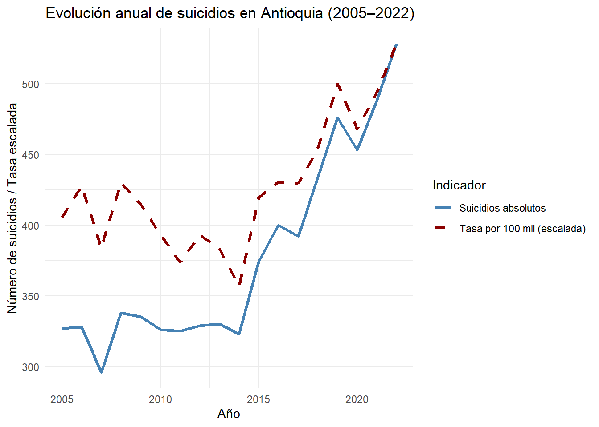
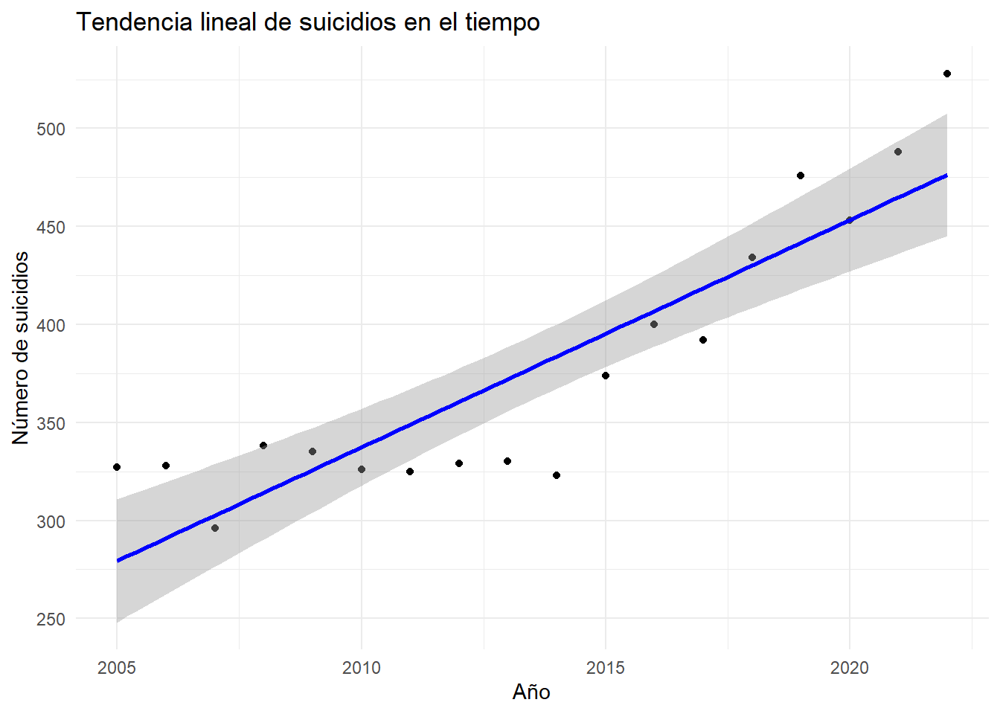
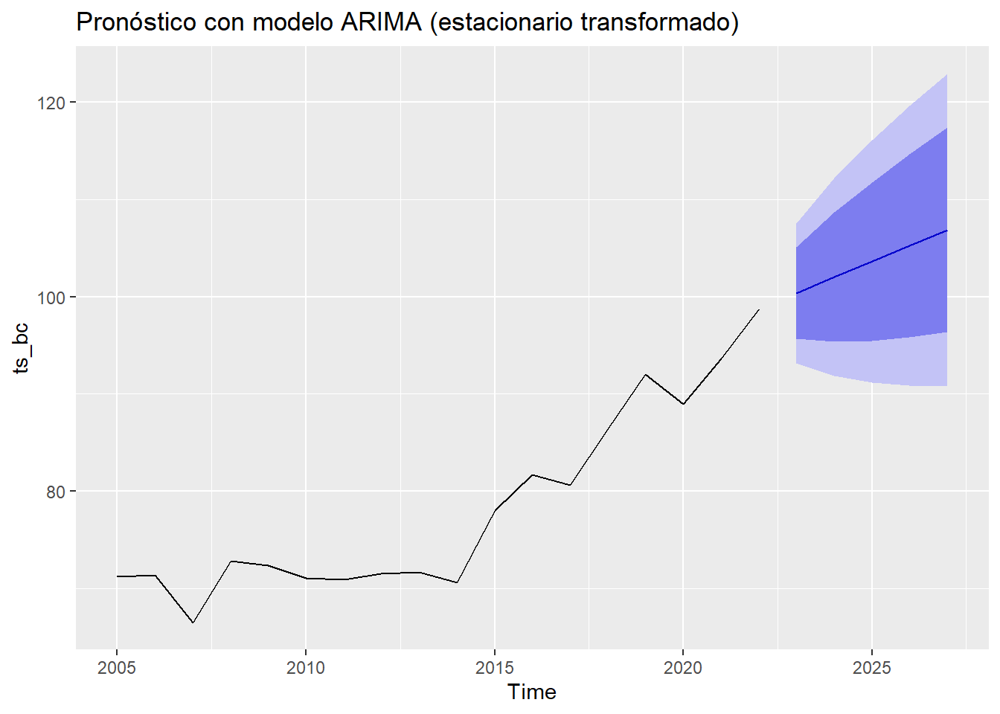

Capítulo 4 Análisis Temporal: Modelos Lineales y Estacionariedad
# Agrupamos datos por año
suicidios_por_ano <- datos %>%
group_by(anio) %>%
summarise(suicidios = sum(numerocasos),
poblacion = sum(numeropoblacionobjetivo),
tasa_suicidios = (suicidios / poblacion) * 100000)
# Ajuste de escalas: llevar la tasa al rango del número de suicidios
escala <- max(suicidios_por_ano$suicidios) / max(suicidios_por_ano$tasa_suicidios)
# Crear nueva columna con la tasa escalada
suicidios_por_ano <- suicidios_por_ano %>%
mutate(tasa_escalada = tasa_suicidios * escala)
# Graficar
ggplot(suicidios_por_ano, aes(x = anio)) +
geom_line(aes(y = suicidios, color = "Suicidios absolutos"), size = 1.2) +
geom_line(aes(y = tasa_escalada, color = "Tasa por 100 mil (escalada)"), linetype = "dashed", size = 1.2) +
scale_color_manual(values = c("Suicidios absolutos" = "steelblue", "Tasa por 100 mil (escalada)" = "darkred")) +
labs(title = "Evolución anual de suicidios en Antioquia (2005–2022)",
x = "Año", y = "Número de suicidios / Tasa escalada",
color = "Indicador") +
theme_minimal()
Evolución de los suicidios y tasa por 100.000 habitantes entre (2005–2022)
La figura anterior presenta la evolución anual del número total de suicidios y la tasa por cada 100.000 habitantes en el departamento de Antioquia, entre los años 2005 y 2022.
Se observa un aumento sostenido tanto en el número absoluto de suicidios como en la tasa ajustada por población, especialmente a partir del año 2014. Esta tendencia sugiere que el fenómeno no se debe exclusivamente al crecimiento poblacional, sino que podría estar asociado a otros factores estructurales o sociales. La tasa por 100.000 habitantes permite controlar este efecto demográfico y revela un comportamiento creciente, lo cual puede representar una señal de alerta en salud pública.
# Ajuste de modelo lineal
modelo_lineal <- lm(suicidios ~ anio, data = suicidios_por_ano)
summary(modelo_lineal)##
## Call:
## lm(formula = suicidios ~ anio, data = suicidios_por_ano)
##
## Residuals:
## Min 1Q Median 3Q Max
## -60.685 -23.252 -3.389 23.692 51.585
##
## Coefficients:
## Estimate Std. Error t value Pr(>|t|)
## (Intercept) -22961.257 2988.829 -7.682 9.34e-07 ***
## anio 11.591 1.484 7.809 7.58e-07 ***
## ---
## Signif. codes: 0 '***' 0.001 '**' 0.01 '*' 0.05 '.' 0.1 ' ' 1
##
## Residual standard error: 32.67 on 16 degrees of freedom
## Multiple R-squared: 0.7921, Adjusted R-squared: 0.7792
## F-statistic: 60.98 on 1 and 16 DF, p-value: 7.579e-07El modelo lineal ajustado muestra una tendencia creciente y significativa en el número de suicidios en Antioquia entre 2005 y 2022, con un aumento promedio de 11.5 casos por año. El modelo explica un 79% de la variabilidad observada, lo cual indica un buen ajuste.
Esta evidencia respalda la necesidad de examinar factores sociales, económicos y de salud pública que puedan estar contribuyendo a este preocupante incremento.
ggplot(suicidios_por_ano, aes(x = anio, y = suicidios)) +
geom_point() +
geom_smooth(method = "lm", se = TRUE, color = "blue") +
labs(title = "Tendencia lineal de suicidios en el tiempo",
x = "Año", y = "Número de suicidios") +
theme_minimal()## `geom_smooth()` using formula = 'y ~ x'
En la grafica se observa un incremento sostenido en el número de suicidios a lo largo del tiempo.La pendiente positiva de la línea azul indica una tendencia creciente. El intervalo de confianza sugiere que esta tendencia es estadísticamente significativa. Los valores extremos hacia el final (2022) muestran un posible aumento más acelerado que el promedio lineal.
# Serie original
ts_suicidios <- ts(suicidios_por_ano$suicidios, start = 2005)
# Transformación Box-Cox y diferenciación (si no es estacionaria)
lambda <- BoxCox.lambda(ts_suicidios)
ts_bc <- BoxCox(ts_suicidios, lambda)
ts_dif <- diff(ts_bc)
# Verificar estacionariedad nuevamente
adf.test(ts_dif)##
## Augmented Dickey-Fuller Test
##
## data: ts_dif
## Dickey-Fuller = -2.2002, Lag order = 2, p-value = 0.4961
## alternative hypothesis: stationary## Series: ts_bc
## ARIMA(0,1,0) with drift
##
## Coefficients:
## drift
## 1.6222
## s.e. 0.8637
##
## sigma^2 = 13.47: log likelihood = -45.71
## AIC=95.42 AICc=96.28 BIC=97.09
##
## Training set error measures:
## ME RMSE MAE MPE MAPE MASE
## Training set 0.003864451 3.460626 3.040904 -0.2617587 3.878032 1.002047
## ACF1
## Training set -0.1775929# Pronóstico
forecast_arima <- forecast(modelo_arima, h = 5)
autoplot(forecast_arima) +
labs(title = "Pronóstico con modelo ARIMA (estacionario transformado)")